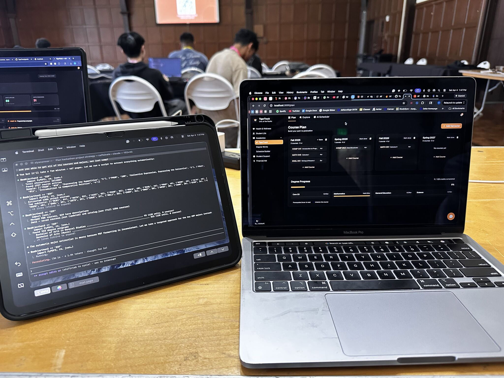
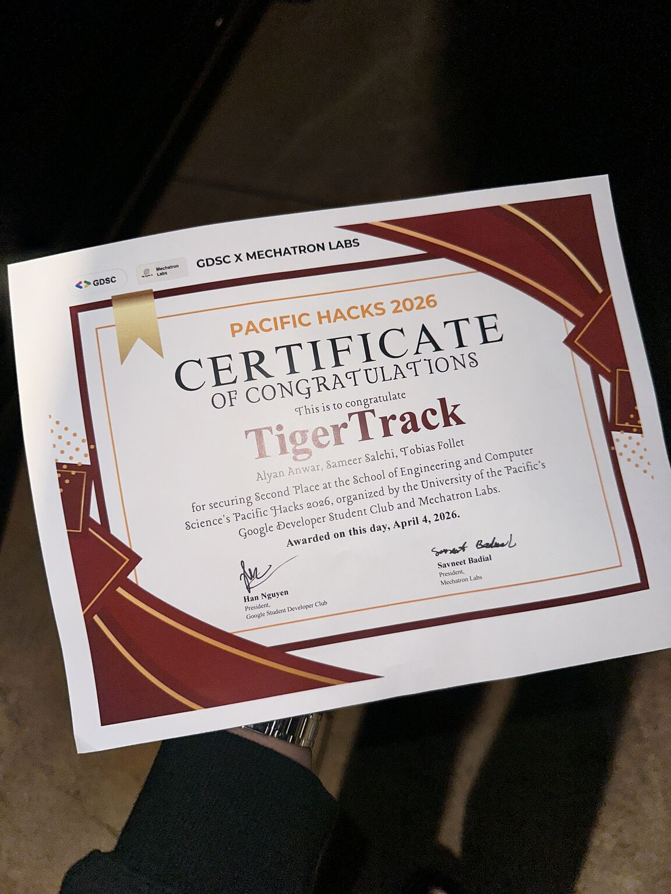
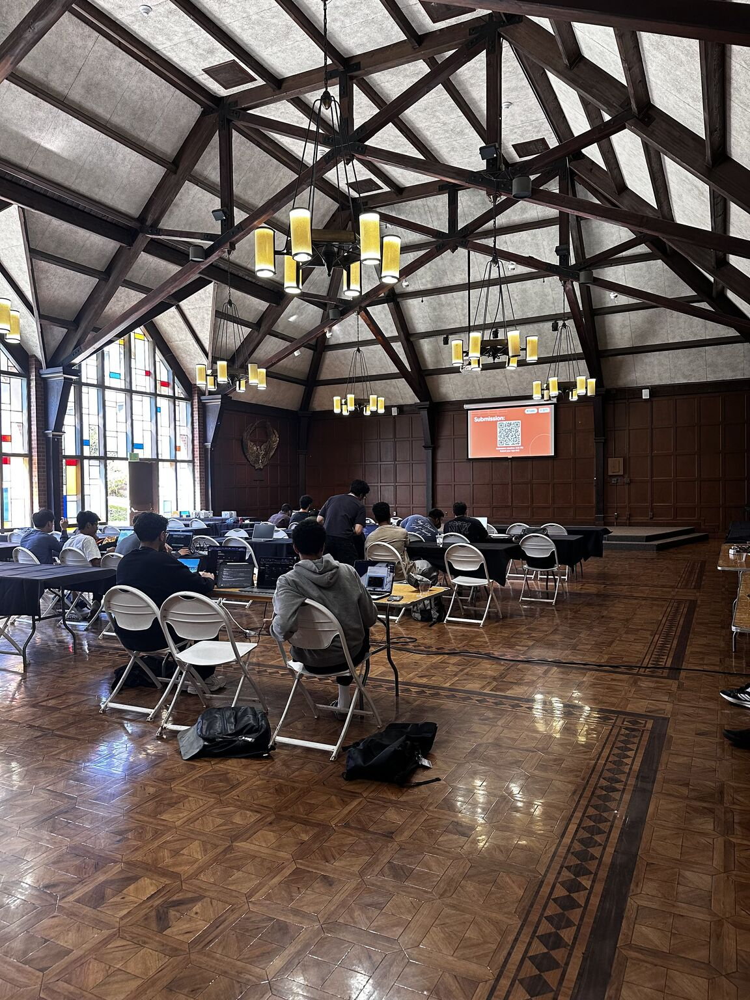

Screenshots





AI-powered course planner for University of the Pacific students — built in 11 hours at PacificHacks with a 3-person team. Now greenlit by UOP for official adoption and actively developed post-hackathon.
LIVE · active development · DegreeWorks API integration next
Screenshots



Demo
TigerTrack is an AI-powered academic planning workspace built for University of the Pacific students. We built it at PacificHacks — UOP's annual hackathon — in 11 hours as a 3-person team. After the hackathon, the University of the Pacific officially greenlit TigerTrack for adoption, and development has continued with real students in mind.
The problem it solves: UOP students have to jump between DegreeWorks (to see what they've completed), College Scheduler (to search for courses), and their own notes just to answer basic questions like "what can I take next semester?" TigerTrack collapses all of that into one place — with an AI layer on top that actually knows your academic profile.
The app shipped with 988 real UOP catalog entries across 77 subjects, live plan persistence per user, a prerequisite-aware algorithmic scheduler, and an AI chatbot grounded in the student's actual degree audit. Post-hackathon, the team is working on deeper DegreeWorks API integration and single sign-on via the university's identity provider.
| Tool | Role |
|---|---|
| Next.js (App Router, TypeScript) | Framework — routing, pages, serverless API endpoints |
| Tailwind CSS v4 | All styling and layout |
| Clerk | User authentication and session management |
| Firebase Firestore | Stores each student's course plan, keyed by user ID |
| Groq API (llama-3.3-70b-versatile) | Powers the Tiger Advisor AI chatbot |
| Custom Algorithmic Scheduler | Prerequisite-aware topological scheduling in TypeScript — no external AI |
| @dnd-kit | Drag-and-drop in the course plan board |
| Vercel | Hosting with automatic deploys on every GitHub push |
The hackathon was 11 hours. I wrote the build guide ahead of time to map out the data strategy, tech stack, and hour-by-hour plan before we even opened our laptops. The most critical step was data collection — we used real DegreeWorks audit data and scraped course information from UOP's College Scheduler portal to populate the app with actual content.
The most interesting engineering challenge was the AI Scheduler. We originally planned to use Gemini to generate schedules, but the prompt → parse → validate loop was fragile. We ended up writing a deterministic topological scheduling algorithm in TypeScript instead — it reads outstanding DegreeWorks requirements, resolves prerequisite chains, and distributes courses across semesters based on the student's target credit load. More reliable, faster, and no API call needed.
The Tiger Advisor chatbot switched from Gemini to Groq mid-hackathon after hitting the free tier quota. Groq's llama-3.3-70b was faster and handled longer context better for the academic planning prompts.
University of the Pacific — PacificHacks, April 2026
Links